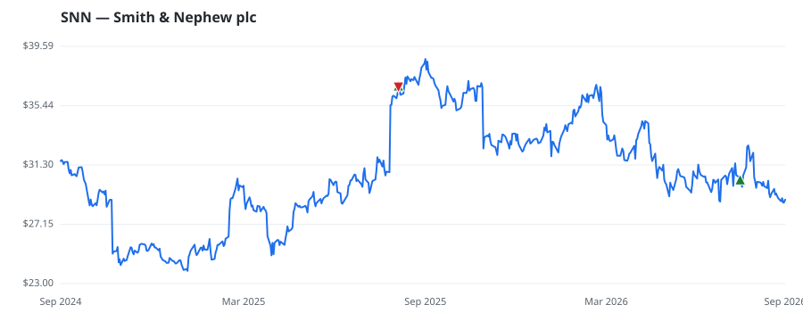

bullish · bearish · n/a — dots: price>SMA10 · SMA10>SMA50 · SMA50>SMA200 · up>down volume (20d)
Other · large cap
Members who bought SNN earned a dollar-weighted -13.0% from their disclosure dates, versus +11.2% for the S&P 500 over the same holding windows (-24.2% alpha).

▲ green = a disclosed purchase · ▼ red = a disclosed sale (plotted on disclosure date)
Smith & Nephew designs, manufactures, and markets orthopedic devices, sports medicine and arthroscopic technologies, and wound care solutions. Roughly 41% of the UK-based firm's revenue comes from orthopedic products, and another 30% is sports medicine and ENT. The remaining 29% of revenue is from the advanced wound therapy segment. Over half of Smith & Nephew's total revenue comes from the United States, just over 30% is from other developed markets, and emerging markets account for the remainder. · website
| Member | Chamber | Out-performer | Disclosed buys $ | Return on buys |
|---|---|---|---|---|
| Lisa McClain | house | — | $8K | -21.5% |
| Alan Armstrong | senate | — | $8K | -4.4% |
Disclosed $ figures are bracket midpoints — filings report ranges (e.g. $1,001–$15,000), not exact amounts.